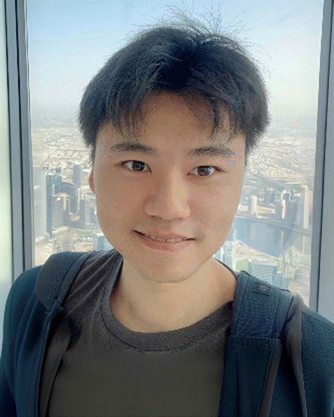

PhD Researcher in Applied Physics
Bochun Kang
I study scalable perovskite solar modules, from fluid-guided thin-film deposition and monolithic laser interconnection to microstructured light-management layers and self-powered flexible optoelectronic systems.

Applied Physics, 2023–2026
22.1%PCE on 7-cell PSMs
98%Geometric fill factor
15.32 cm2Active module area
3Selected publications
Profile
Scaling efficient perovskite photovoltaics from lab films to integrated modules.
My research connects semiconductor materials, coating hydrodynamics, microfabrication, and device engineering. I am especially interested in the design rules that allow high-quality perovskite and hole-transport layers to be fabricated uniformly at module scale.
Current work spans customized blade-coating architectures, laser-patterned monolithic interconnection, photolithographic anti-reflection structures, and flexible self-powered device systems for sensing applications.